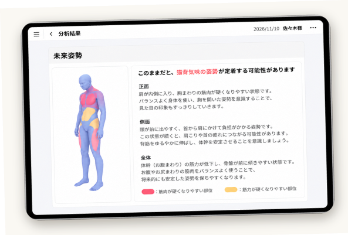
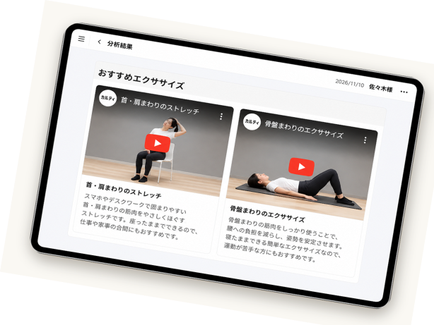
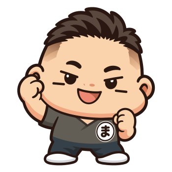
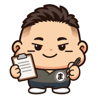
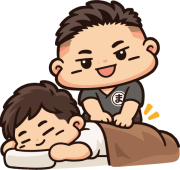
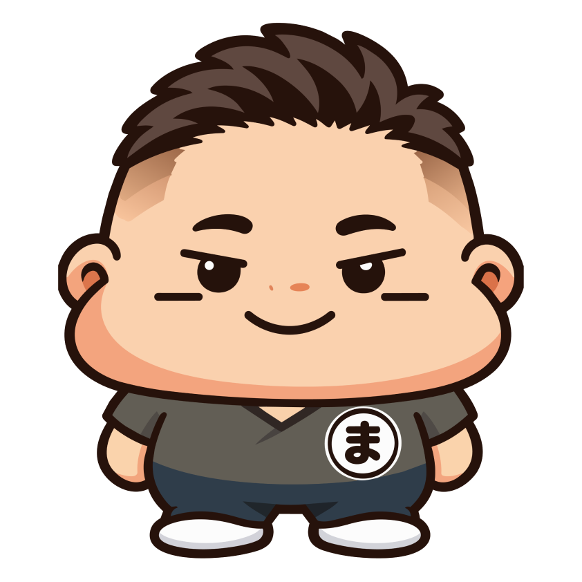

受付時間
営業時間
- 月・水・木・金
- 10:00〜13:00 / 15:00〜20:00
- 土・日
- 10:00〜13:00 / 14:00〜18:00
定休日：火曜日・祝日
最終受付：平日20:00／土日18:00
上記は施術開始時間です。予約優先制営業時間外の施術も事前相談にて対応いたします。
セミナー参加等により、休診日や受付時間を変更する場合があります。
お支払い方法
現金・クレジットカード・交通系IC・電子マネーに対応しています。 期間限定
期間限定
2026. 11/10〜11/1611/10
11/10〜11/16 7日間限定


あなたの姿勢を AIで分析！ おすすめエクササイズもご紹介！

 OTHER MENU
OTHER MENU
お一人おひとりの身体の状態に合わせて、さまざまな施術をご用意しています。
 FLOW
FLOW
STEP 01

Web予約・お電話・LINEから、ご都合のよい方法でご予約ください。
STEP 02

ご来院いただき、受付にてお名前をお伝えください。
STEP 03

お悩みや生活習慣をお伺いし、身体の状態を確認します。
STEP 04

一人ひとりの状態に合わせた施術を行います。
 ABOUT US
ABOUT US

今の身体の状態を知ることから、 これからの身体づくりは始まります。
佐々木整骨院では、姿勢分析を通して身体の状態を見える化し、一人ひとりのお悩みや生活に寄り添ったケアをご提案します。
地域のみなさまの健康を、これからも。
柔道整復師 / 院長
 ACCESS
ACCESS
営業時間
定休日：火曜日・祝日
最終受付：平日20:00／土日18:00
上記は施術開始時間です。予約優先制営業時間外の施術も事前相談にて対応いたします。
セミナー参加等により、休診日や受付時間を変更する場合があります。
お支払い方法
現金・クレジットカード・交通系IC・電子マネーに対応しています。駐車場：当院入口前に2台完備
 FAQ
FAQ
動きやすい服装でお越しください。お着替えのご用意もございます。女性専用のお着替えもご用意しております。
はい、お子さま連れでも安心してご来院いただけます。
自費診療でのご案内になります。
当院入口前に2台分の駐車場をご用意しております。

 RESERVE
RESERVE
ご予約はWeb予約が便利です。お急ぎの方はお電話、ご相談はLINEからも承っております。
24時間いつでもご予約いただけます。初めての方もこちらから。
Webで予約（新しいタブで開きます）気になることを気軽に
ご相談いただけます。
お急ぎのご相談は
お電話が便利です。
当院への営業・勧誘を目的としたお電話はご遠慮ください。